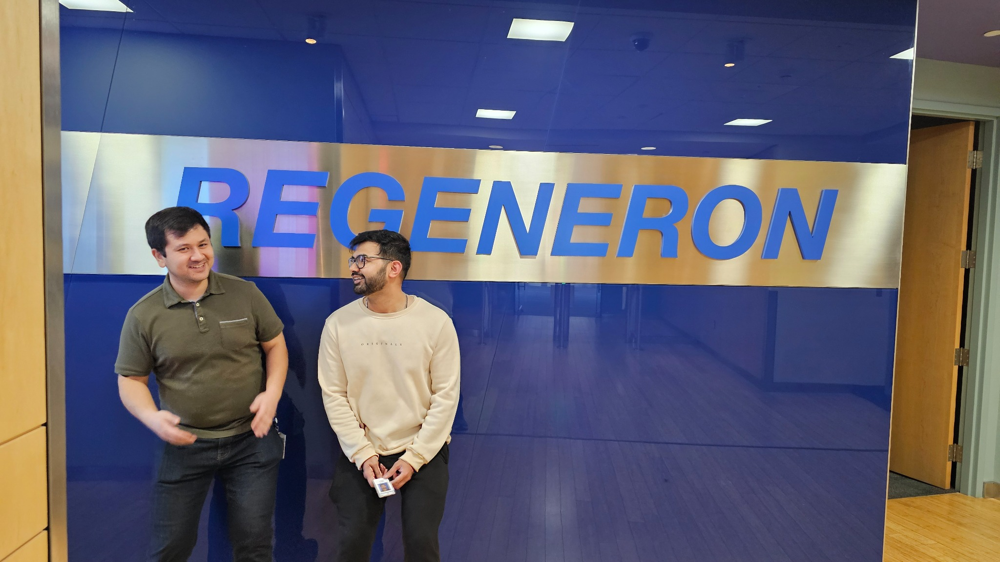
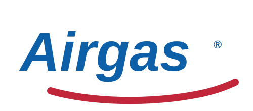

Industry Highlights

Regeneron Pharmaceuticals
Formulation Development Group — Tarrytown, NY (2024)

Airgas
Air Liquide Company — logo-only display for Airgas experience
INDUSTRIAL EXPERIENCE
Regeneron Pharmaceuticals — Formulation Development Group (June 2024 – December 2024)
- Product Development: Worked with small molecule and product development teams to understand the application of Antibody–Drug Conjugates (ADCs) into diverse drug product formulations.
- Process Development:
- Analyzed solubility trends of 20+ monoclonal antibodies (mAbs) via PEG-induced liquid-liquid phase separation, assessing cloud point temperature and hydrodynamic sizes.
- Collaborated with process development teams to achieve a 2-fold reduction in reducing lyophilization times for drug formulations under clinical development.
- Process Optimization: Applied cGMP standards and DOE principles to assess the photostability trends of formulations, improving drug product quality and efficacy.
- Analytical Method Development: Optimized ADC analytical testing protocols with Solo-VPE, SEC, HPLC, ICE, and MFI to assess photo-degradation and excipient impact.
- Data Analysis: Reduced the solubility and stability data analysis time by 10-fold through implementation of AI tools and Visual Basic 6.0 scripts.
- Technical Documentation: Proficient in ELN, Empower, and LIMS for efficient data management and regulatory compliance.
- Soft Skills: Experienced cross-functional collaboration, fast-paced biopharma working style, teamwork, initiative, and improved scientific writing through technical-writing workshops.
Airgas – An Air Liquide Company (May 2019 - August 2019)
- Process Development: Designed and executed a lab-scale inert-gas sample storage process using a glove-bag set-up to maintain protein stability during sample handling.
- Process Optimization: Conducted light scattering and spectroscopy experiments and applied DOE principles to optimize protein–gas–liquid interactions for sample storage.
- Analytical Method Development: Developed an inert-gas-based solvent saturation method, reducing protein aggregation by 5–7-fold for proteins such as IgG and Chymotrypsinogen using DLS and fluorescence spectroscopy.
- Data Analysis: Accelerated the analysis of time–temperature–resolved DLS datasets by 4-fold using MATLAB scripts.
- Technical Documentation: Performed precise technical documentation of experimental workflows, datasets, and findings to ensure compliance with industry reporting and validation standards.
- Soft Skills: Collaborated with multiple interdisciplinary teams spanning Airgas and NC State University. Delivered data and presentations on schedule to stakeholders, demonstrating strong written and verbal communication, reliability, accountability, and time management.